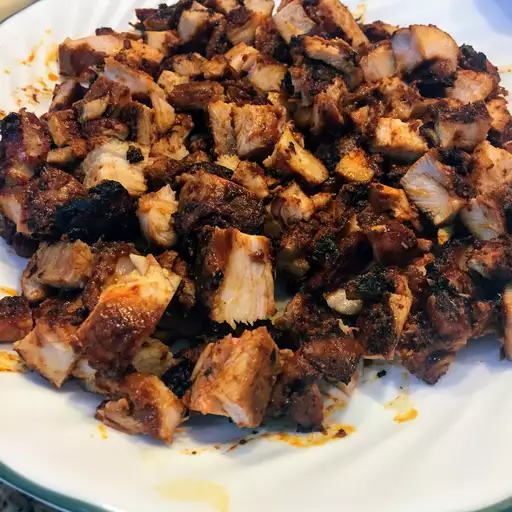

Copycat Chipotle Chicken

Description
This chipotle chicken recipe requires just a small amount of effort for a delicious and healthy meal. You can use this chicken for tacos, burritos, bowls, or fajitas. Just add your favorite toppings such as lettuce, salsa, rice, beans, cheese, or sour cream. Enjoy!
Ingredients
- 1 ounce dried chipotle chile pepper
- 1 ounce dried ancho chile pepper
- ½ cup water
- ½ red onion, cut into small chunks
- 4 cloves garlic
- 2 teaspoons sea salt
- 1 teaspoon ground cumin
- 1 teaspoon dried oregano
- 1 teaspoon freshly ground black pepper
- 2 tablespoons olive oil
- 2 ½ pounds skinless, boneless chicken thighs